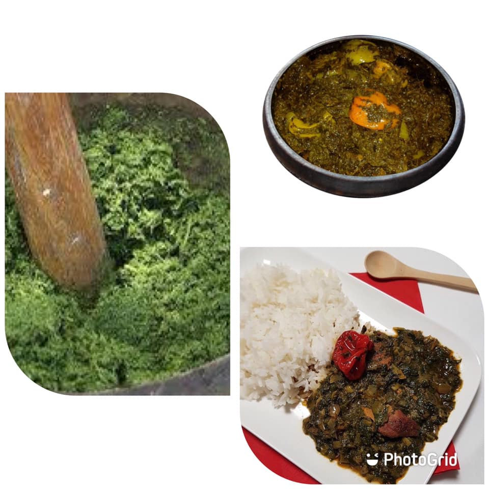

BAWIN FORT

Repas traditionnel facile à préparer
La sauce Bawin est un plat traditionnel originaire de l’ouest de la Côte d’Ivoire. C'est une spécialité du peuple guéré. Sauce feuilles, elle est essentiellement constituée de feuilles fraîches de manioc. Ce mets fait office de plat principal et se consomme exclusivement avec du riz.
Ingredients
- FEUILLES DE MANIOC
- VIANDE DE BŒUF
- GRAINES DE PALME
- OIGNONS
- SEL
- CRABE
- BROCHET FUME
- MAGNE EN POUDRE
- POUDRE DE CREVETTES
- PIMENT SENT BON
- ADJUEVAN
- CUBE D’ASSAISONNEMENT
Préparations
- Comme pour la préparation de la sauce graine, on fait le jus qu’on dépose à part
- On écrase les feuilles de manioc dans un mortier qu’on dépose aussi à part et qu’on fait bouillir dans une autre casserole pendant 1 heure
- En suite dans une casserole, on met la viande et le brochet
- On y ajoute un peu d’oignon découpé, du sel et un peu d’eau qu’on dépose sur le feu pendant 5 à 10 min
- Ensuite, on verse dans la casserole le jus de graine qu’on laisse bouillir normalement et le piment sent bon
- Ensuite on mélange les feuilles à la sauce, on y ajoute la poudre de crevette, la poudre de poisson magne et l’adjuevan
- On retire le piment qu’on écrase et rajoute à la sauce
- On laisse la sauce cuire et on met ensuite le cube d’assaisonnement
- On vérifie l’assaisonnement final et on laisse mijoter pendant 15-25 min et on retire du feu